Introduction
The SpIBDer-verse is a collection of methods that was primarily developed for the analysis of IBD networks, but can in principle be used for networks of any type (this usability in development). SpIBDer-verse can be used for three main approaches to network analysis: (i) visualisation, (ii) data exploration and (iii) formal hypothesis testing.
The SpIBDer-App is designed to be modular, with modules arranged into tabs, with the exception of three tabs for loading/checking data (Load data, Edge info and Node info) and one tab for exporting figures (Export plot). New modules can be added in future releases of the SpIBDer-verse as new methods are developed, or if users request new functionality.
Any new network analysis begin with the same task: getting your data into the app. Networks in general require two types of information: node and edge information.
- Node information: (meta data) reflects properties of the individual units in your analysis: most likely sampled individuals, and may include variables such as their sample ID, genetic sex, age at death, etc. The first column in this file should contain the node (individual) ID, and then each row contains any meta data/information about the nodes that you might want to visualise or analyse.
- Edge information: this file contains information about the connections between node (individuals), and hence the first two column must contain the names of two nodes as found in the node information. This table can include numerical or categorical information, such as the IBD information from ancIBD, the geographic distance between two burials or the type of relationship if it has been estimated (Parent/Child, 4th-degree etc).
This is the minimum information that can be uploaded to the app to run SpIBDer-app. We now explain how each module works, tips and tricks for using the app and how some output can be interpreted.
Running the app
To launch the SpIBDer-app, first load the package and then run the app by typing into the command line in R:
Loading data
Please note that the “Load distance data” function is currently under development and cannot currently be used.
Pre-loaded and simulated data
When SpIBDer-App opens, you will (by default) be in the Load Data Tab [1], and (again by default) specifically in the Example dataset mode [2]. This mode allows users to load one of three simulated data sets, which can be selected in the drop-down list [3], and can be used to explore the functionality of the SpIBDer-App.
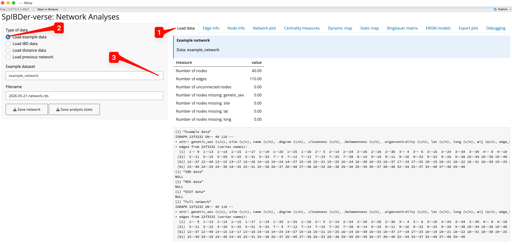
Figure 1: Load Data Tab - Load example data mode.
However, you are probably more interested in loading your own data….
Loading your own data
We can now load in our data. For the examples here we load in the data from (Rohrlach et al. 2026), which was originally published by (Wang et al. 2025). To the IBD data we have added an edge weight, denoted , which is simply the total sum of IBD blocks ≥8cM.
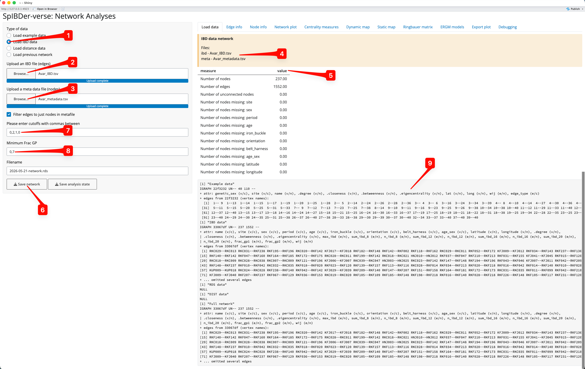
Figure 2: Load Data Tab - Load IBD data mode.
We can change to Load IBD mode by clicking on the correct (radio) button [1]. You will then need to upload the IBD file by clicking on the Browse… button for IBD files [2] (this defines the edges), and a meta data file by clicking on the Browse… button for meta data files [3] (this defines the nodes). Note that these files are uploaded to SpIBDer-App on your system, and certainly not online. Once these are files are uploaded, you can see this information in the yellow box [4].
Currently, SpIBDer-App can only accept the output from ancIBD (Ringbauer et al. 2024), and a cut off based on the number of blocks of IBD of length ≥8cM, ≥12cM, ≥16cM and ≥20cM. However, the format of the meta data table can be quite flexible: as long as the first column is made up of the names of the individuals (and matches the names in the IBD file), the remaining columns will be automatically read in. For example, SpIBDer-App has read in our meta data, and automatically realised that we have node variables called site, sex,…, longitude [5]. Note that information about the edges and these variables is given, counting the number edges, the number of nodes, and importantly, how many times your meta data has missing values for each node variable [5]. These variables will be made available to be used in plotting functions and in the downstream analysis tabs (introduced later in the vignette). Technically, this is also true for the IBD table, although the first two columns must now be the names of nodes (individuals), although this functionality is currently limited.
Given all of this hard work, you can save this network object at any time for later use [6], which can be loaded into SpIBDer-App to save time for continuing your analysis later (see next section).
Now we must define what we mean by an edge being “present”, and we do this by defining a string representation of the vector of IBD block length thresholds, defined [7], where is the number of IBD blocks of length ≥cM. In the ERGMs paper (Rohrlach et al. 2026) we defined two individuals as being connected/genetically related if they shared at least two IBD blocks of ≥12cM and one block of ≥16cM, which would be defined by the entry “0,2,1,0”. Not that we use a zero in the first entry of the string because if an individual has two IBD blocks of ≥12cM, then these two IBD blocks are also ≥8cM. Hence, “0,2,1,0” is equivalent to “2,2,1,0”. As another example, if you wished to have all edges where any IBD blocks (≥8cM) were detected, say for plotting the edge weights, then the string “0,0,0,0” would be sufficient.
Finally, the authors of ancIBD suggest using a quality control cut off for samples, called here the “frac_gp”, of 0.7. The frac_gp is defined as proportion of genotype posterior probabilities above the threshold of 0.99 when the sample was imputed. We make this the default, although this can be changed in the text box [8].
We have now defined our network for downstream plotting and analysis (this can be seen and ignored in the bottom right [9]). Note that you can come back to this tab to change the IBD cut off vector for relatedness, and the quality control frac_gp value at any time in the analysis.
Loading a previous network
Assuming you saved your previous network object for later use, you can load this straight into SpIBDer-App to save time (done by clicking the “Save analysis state button in any tab). We can change to Load previous network mode by clicking on the correct (radio) button [1], and finding the RDS file saved earlier by clicking on the Browse… button [2].
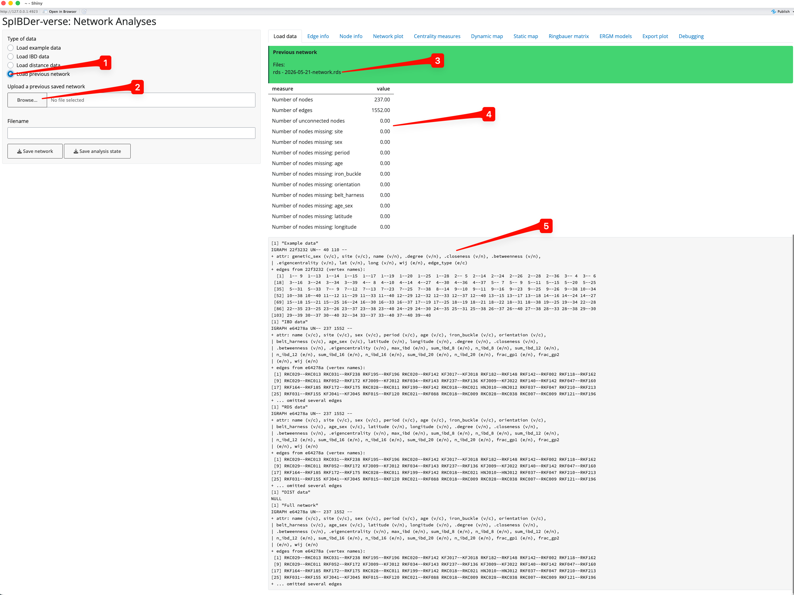
Figure 3: Load Data Tab - Load previous network mode.
The loaded file name will appear in the green box [3], and the variables [4] and full (and ignore-able) network object information [5] will appear as before.
Filtering the node table
Once loaded into SpIBDer-App, the edge table (IBD information) can be visualised [1].
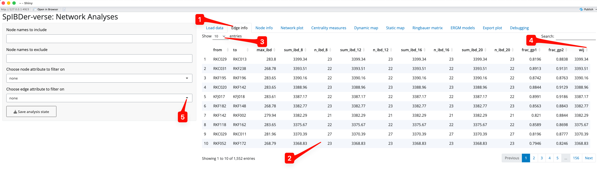
Figure 4: Edge Info Tab.
The node names, all of the IBD information, and any additional edge information can be seen for every row in the uploaded edge table [2]. This table can be made to have more rows visible at once [3]. Columns can be arbitrarily ordered (ascending or descending) by clicking on the arrows next to the column names. For example, if you were interested in seeing how had the smallest edge weight () you could click the arrows next to “wij”, and to see the highest edge weight, this could be clicked again [4].
Edges meeting (or failing some other criteria) can also be excluded in this tab. For example, if you wished to exclude individuals with a cM, you could click the “Choose edge attribute to filter on” button [5].
(Zooming in:) after first selecting [6], SpIBDer-App recognises that the variable is quantitative (numeric). We are then given the option to set a lower [7] and upper [8] bound for the edge values we wish to keep.
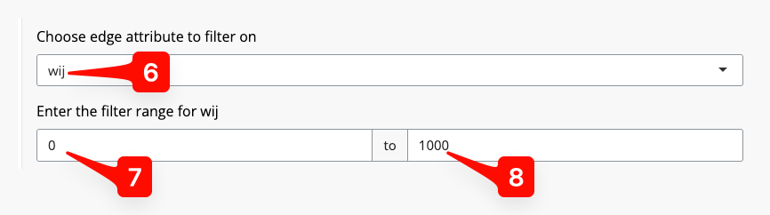
Figure 5: Edge Info Tab - setting an edge inclusion or exclusion.
Filtering the edge table
Like the edge table, the node table can also be seen [1]. The left hand panel of options looks the same as for the Node Info tab, and the visualisation of the node table is also very similar.
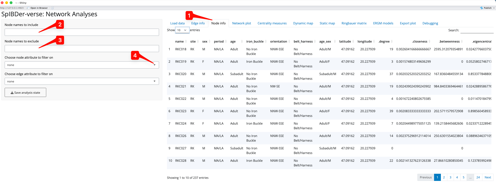
Figure 6: Node Info Tab.
It can be used in the previous Edge Info tab, but we now introduce the node inclusion and exclusion options here. First, based on the node names, we can either include only [2] or exclude [3] individuals using a comma separated string. For example, if you wanted to include only RKC018 and RKC019, we can type “RKC018,RKC019” into the include text box [2]. Similarly, if we want to exclude RKC018 and RKC019, but keep everyone else, then we could type “RKC018,RKC019” in the exclude text box [3]. Sub strings also work, so one could include or exclude any individual whose name starts with RKC (and hence comes from that site) by simply entering “RKC” in the relevant text box.
Nodes can also be included or excluded using the “Choose node attribute to filter on” drop down list [5]. For example, we might wish to analyse only adult individuals.
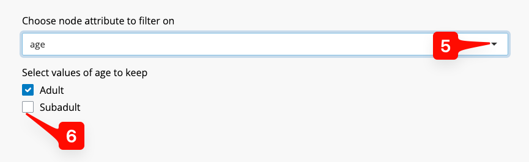
Figure 7: Node Info Tab - setting an node inclusion or exclusion.
To do this, we click on the “age” option from the list. SpIBDer-App recognises that this is a qualitative (categorical), and each level is presented as a check box [6]. Simply check the options you wish to keep, which in this case is “Adult”.
Note that you could use name as the node inclusion attribute, and select the individuals this way. This would not be feasible for very large networks.
Plotting your network
SpIBDer-app allows users to plot their network in two ways. First, in network space, where finding coordinates (an orientation) that keep connected nodes together, and unconnected nodes apart, is the aim. Other software can make network plots, and SpIBDer-app simply uses the ggnetwork package to do this. Second, in geographical space, for which we have tabs for both exploring your data and for producing publishable plots.
Plotting in network space
First, we focus on network space visualisation in the Network Plot tab [1]. Note that finding “optimal” coordinates is a random algorithm, and plotting the network will produce different results every time. To avoid a situation where a preferred orientation is found, and later lost, or to keep a consistent orientation between analyses, we include a an option called “Set seed” which allows the user to set the random seed for the orientation, making it reproducible. It also allows the user to change the orientation by entering a new seed, if they are not happy with the default orientation (default = 1000) [2].
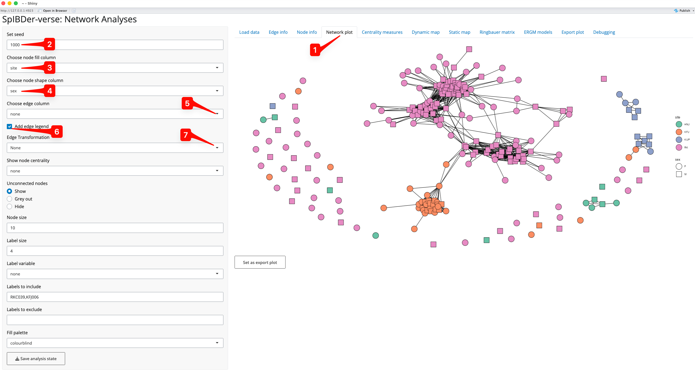
Figure 8: Network plot Tab.
We can also change the appearance of the nodes by assigning variables (“aesthetics”) to the filled colour (site [3]) and the shape (genetic sex [4]) of the nodes.
We can assign a variable to the edges [5] which can be either numerical or categorical, and SpIBDer-App will detect this. We can also choose whether to display the edge variable legend [6], and in the case of a numerical variable, we can change the scale to be on a log-scale [7]. However, for this example, we leave the edges without an assigned variable.
Some networks may contain many unrelated/unlinked individuals, and we may choose to remove these individuals in networks plots to focus on the connections that we do observe. We can either grey these nodes out (making them mostly transparent), or remove them completely [8]. This is the network representation we will continue to work with in this plotting section.
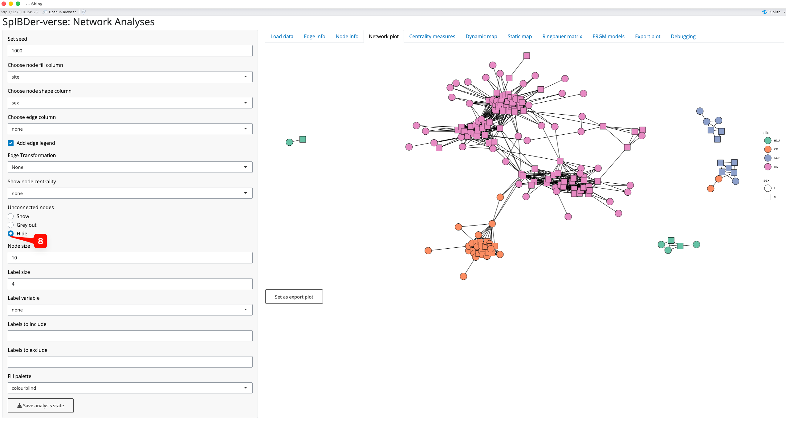
Figure 9: Network plot Tab - removing unconnected nodes.
We can also visualise the measures of centrality of the nodes in our network. What a measure of centrality is will be covered in the section titled “Looking at centrality measures”, but here we will visualise the “betweeness centrality” which can be thought of as a measure of how important an individual is to the networks connectedness. In this context, it might be that individuals with very high betweeness centrality are individuals that connect otherwise separated sub-groups/sub-pedigrees of individuals, and this should be visible in the plot.
By choosing the “betweeness” option from the drop down menu titled “Show node centrality” [9], the transparency level of the fill variable is defined by the betweeness centrality. We can also add labels (using the “Label variable” drop down menu [10]), and here we add the genetic sex of the individuals. The size of the node [11] and the label text [12] can also be changed. Note that it is possible to add just some labels by either including or excluding them via the text boxes [13]. Note that this will not change the node set, but will just choose which nodes labels are displayed.
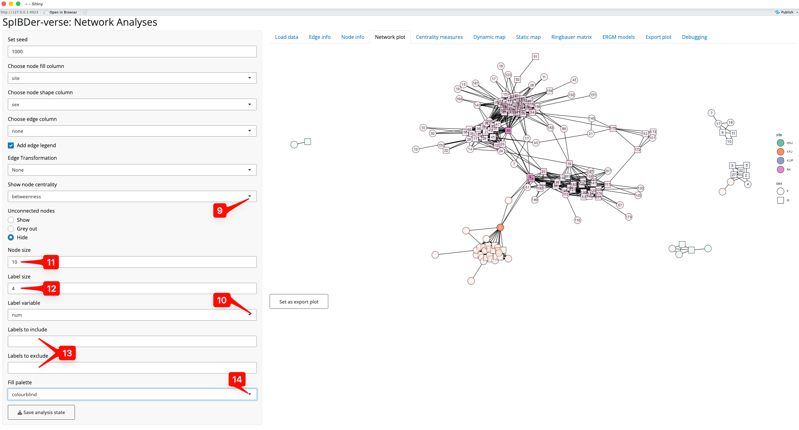
Figure 10: Network plot Tab - visualising centrality measures.
Finally note that we changed the colour palette from default to colour-blind using the “Fill palette” option [14].
The node label option can be used to find individuals of interest. For example, to find where the individual RKF179 is in the network we could (a) change the “Label variable” to “name” [15], and (b) enter the string “RKF179” into the “Labels to include” text box [16], revealing the location of this node [17].
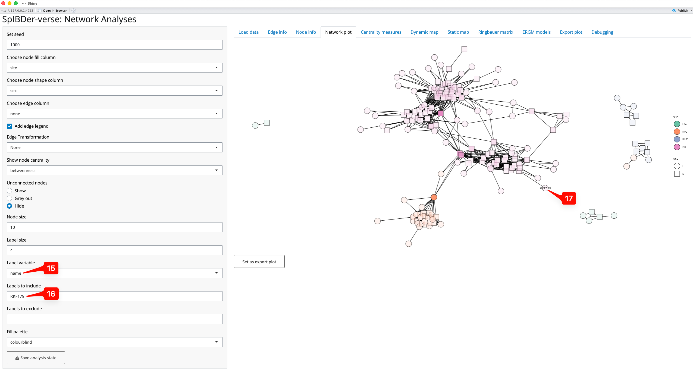
Figure 11: Network plot Tab - finding an individual by name.
Dynamic mapping in geographical space
Exploring who is connected and to where is a feature that can be useful, even when not producing images for publication. The Dynamic map tab [1] allows researchers to very quickly explore their networks in geographical space without the slow-paced nature of producing high-resolution maps.
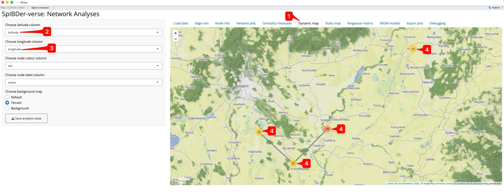
Figure 12: Dynamic map Tab.
Naturally, we must supply a latitude and longitude for each individual in the meta data table, and then specify these in the drop-down menus called “Choose latitude column” [2] and “Choose longitude column” [3]. SpIBDer-App will then automatically create a centred map. However, we do not see all of the individuals from the network plot. Instead we only see four points, with numbers [4]. This is because the individuals were buried at the same site, with the same latitude and longitude, and hence overlap each other, so what we actually see are the four sites, and the number of (overlapping) individuals at each site.
We can use a couple of features to explore the map. First we assign genetic sex to the node colour [5], and the same for node label [5]. Now when we click on the western-most site (KUP) [7], the overlapping individuals expand, and we can see the mix of genetically-male (green) and female (purple) individuals.
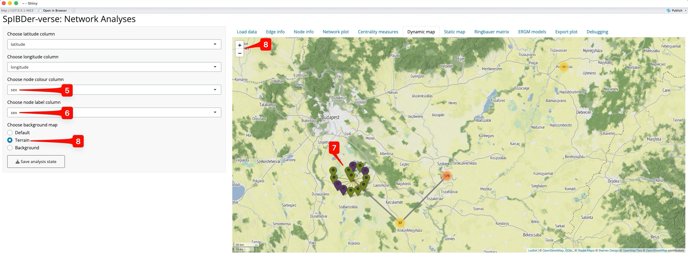
Figure 13: Dynamic map Tab - Zooming in.
Note, we can change the background map using the “Choose background map” radio buttons [8], and zooming out and in can be done either with the scroll function on your mouse, or the +/- button on the map [8].
Static mapping in geographical space
Producing publication-ready figures of genetically-related individuals on a geographic map is important to show the scale of the spatial relationship between related individuals. However, unlike the Dynamic map tab, the static map tab allows for more meta data to be included in the figure [1]. As for the dynamic map, you must have a columns with the spatial coordinates of the individuals, and these must be selected in the “Choose latitude column” [2] and “Choose longitude column” [3] drop-down menus.
Critically, you must have an API key to use Stadia Maps 42]. To do this, go to their website (https://docs.stadiamaps.com/authentication/) which has easy-to-follow instructions, and a video showing the process with explanations.
Note that while the plot may look small in the SpIBDer-App, the dimensions can be changed when exporting the figure.
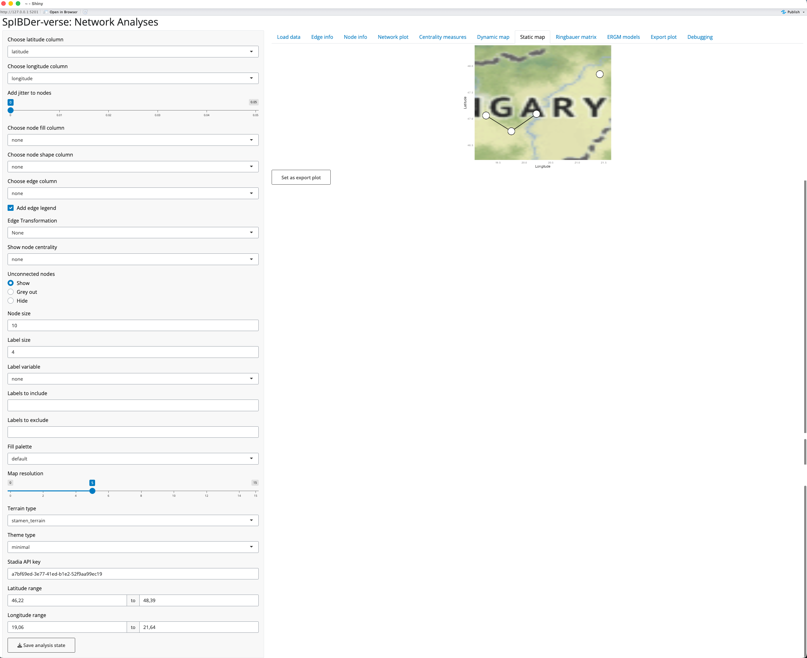
Figure 13: Static map Tab.
Now that we have a basic map, we can change other settings to make a more informative example. However, while finding the optimal settings for your plot, we would suggest leaving the “Map Resolution” (how much detail the map has) setting [5] low (say around 5). This is because each time you change the limits of the x- and y-axes (the bounding box), SpIBDer-App will potentially download new map data, which can be slow for very high zoom settings.
For this example, we have made the following plotting parameter changes (in order):
- Node fill variable set to “site” [6].
- Node shape variable set to “sex” [7].
- Set node size to 4 [8].
- Added 0.05 jitter to nodes [9].
- Note that everyone with a matching burial site also has matching latitude and longitude coordinates. hence, by adding jitter, we can better see the relative number of individuals at each site, and the density of between site connections.
- Edge variable was set to “max_ibd”, the maximum block of IBD length
for a pair of individuals [10].
- We also choose to keep the edge legend [11], and
- change the scale of the edge weight to be on a log-scale [12].
- Set fill palette to Colourblind [13].
- Remove axis labels and values by setting the ggplot theme to void [14].
- Made the plotting space slightly larger by:
- Changing the latitude range to 45 and 49 [15],
- Changing the longitude range to 18 and 22 [16].
- Set the visual style of the map to “stamen_terrain_background” [17].
- Set the map resolution to 10 [18].
After using the “Export Plot” functionality, we produce the following 300 PPI, inch png:
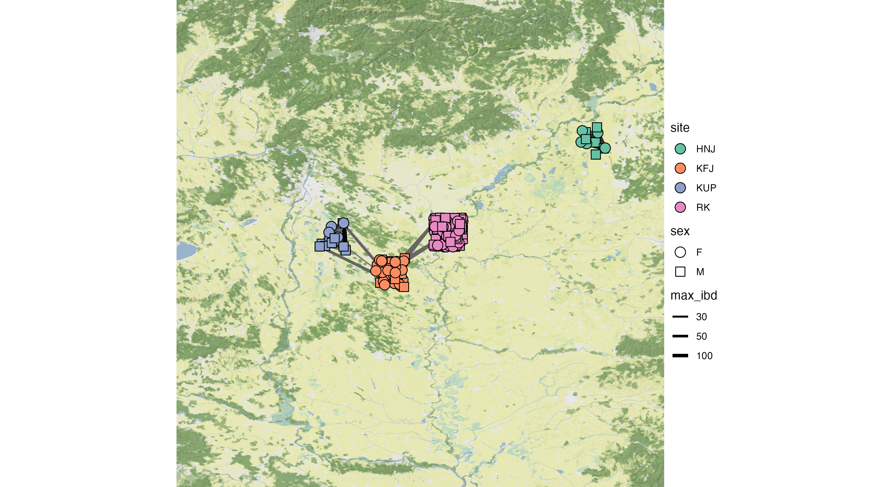
Figure 15: Exported plot using the above settings.
Looking at centrality measures
A class of statistics, called “Centrality” measures, assign either values or rankings to nodes in a network. These values reflect different properties of the network, and currently SpIBDer-App calculates four common, but important node-wise measures. Here we explain the meaning of each of these measures, and an interpretation of what they mean for a node/individual in the context of relatedness networks.
- Degree: the number of other individuals an individual is connected to. High values indicate an individual has more relatives.
- Closeness: the inverse of the sum of the shortest paths to all other nodes. Low values indicate that an individual is relatively closely related to all others. This value is only calculated per connected sub-graph, and receive a missing value if the node has no connections (degree zero).
- Betweeness: how frequently an individual appears on the shortest path between all pairs of individuals. High values indicate that an individual is important to connecting the network.
- Eigencentrality: a measure of “prestige” on the network. High values indicate that an individual is connected to many highly-connected individuals.
SpIBDer-App allows users to explore these values on the network, either by individual, or the average per variable-stratified group in the “Centrality measures” tab [1], returning both a table of values and a histogram or set of box plots. By default, the overall distribution of the degree of centrality is shown as a histogram [2]. However, we can also see this for the other centrality measures by changing the radio button option [3].
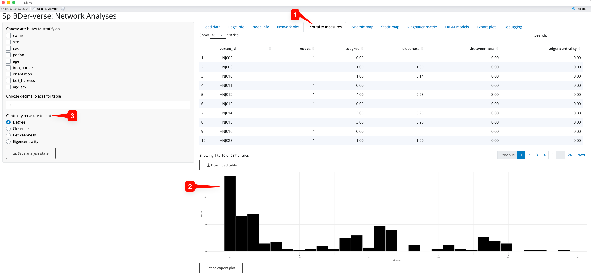
Figure 16: Centrality Measures tab.
We can also explore the average centrality values by stratifying the measures by any combination of variables in the “Choose attributes to stratify on” check boxes [4]. For example, if we were interested in the the distribution of the degree of centrality for the different genetic sexes (M or F) [5] in the two time periods (EA or MA/LA) [6], we simply select these boxes, and make sure that Degree is selected in the “Centrality measure to plot” radio buttons [3]. We can now see that the number of relatives that genetically-male individuals had in MA/LA seems to be much higher than for genetically-male individuals in the EA, and that genetically-male individuals appear to always have more relatives than genetically-female individuals [7].
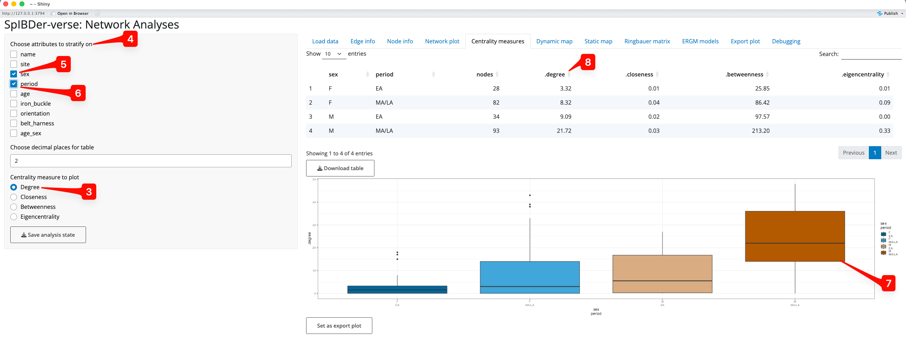
Figure 17: Centrality Measures tab - stratifying on multiple variables.
Finally, it is these values which can be visualised in the Network Plot and Static Map tabs.
Note that we can reorder the table of values to find individuals with higher centrality measures by pressing the arrows next to the column names [8].
Looking at connectedness using the Ringbauer matrix
Looking at the rate of connectedness for levels of certain variables can be of interest. For example, seeing that certain sites, cultural groups or demographically-defined subsets of the population can be extremely informative. Using the “Ringbauer Matrix” tab [1], SpIBDer-App creates matrices of connectedness, visualised as a dendrogram-arranged heat map, and named for Figure 4 in (Ringbauer et al. 2024).
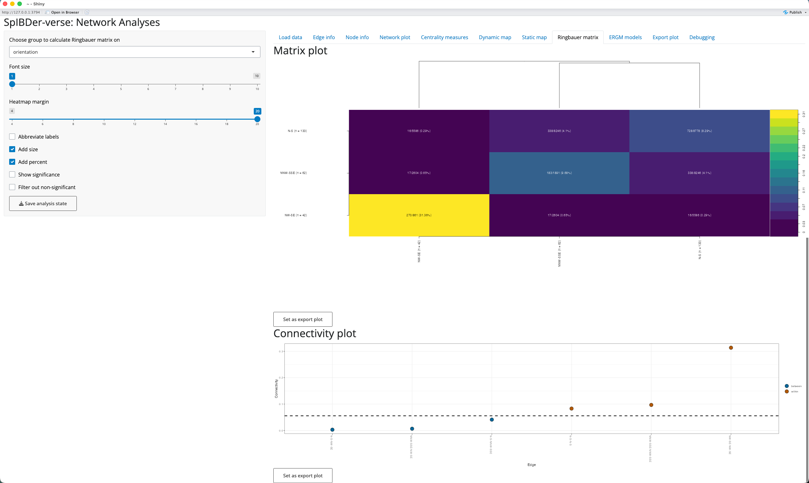
Figure 18: Ringbauer plot tab.
We select a variable to stratify on by using the “Choose group to calculate Ringbauer matrix on” drop down menu [2], here choosing orientation (the direction in which the buried individual was facing: N-S, NNW-SSE or NW-SE). To improve the “Matrix Plot” [3], increase the border width to better see the y-axis labels [4], and add the subgroup sizes to the axis labels [5] and percentages of connectedness to the cell text [6].
We also include the “Connectivity Plot” [7] to allow users to see the levels which are more or less connected than the average. For example, here we can see that individuals who share the same burial position (brown “within” levels points) are more connected than two random individuals (the dashed line [8]), and that individuals with different burial positions (blue “between” levels points) are less connected.
Fitting Exponential Family Random Graph models (ERGMs)
Predicting if two individuals are genetically-related given node and edge attributes can be of interest when exploring how and why the network is connected as it is. For example, if we believe that patrilocality is being practised, then we should also observe that adult female individuals are less likely to be related. To explore this we use Exponential Family Random Graph model (ERGMs) to perform network regression, which has been shown to perform well (Rohrlach et al. 2026), implemented in the “ERGMs” tab [1].
A list of possible predictor variables are generated from the meta data, and are treated differently if SpIBDer-App assigns them as numerical or categorical. However, the level of complexity in how the variables interact between individuals is of importance, and so we explain this concept here. However, for a full discussion with examples, please see the ERGMs paper (Rohrlach et al. 2026). However, once a variable is selected, it will appear in the left panel, and the level of complexity can be chosen for comparison.
Note that as more variables and levels of complexity are included, many models must be fit and this can take quite some time.
Categorical variables
Consider a categorical variable, say, the burial site. We can consider three levels of complexity:
- [nodematch]: It might only matter if two individuals have a matching variable level, i.e., either they were buried at the same site, or not. Which site(s) is not important, just that they matched. We would expect that if two individuals are buried at the same site, that they might be more likely to be related.
- [nodematch(diff)]: It might matter if the two individuals have matching variable levels, and if they do match, which level it is is important too. For example, it might be that individuals are more likely to be related if they are buried at the same site, but that one site is represented by a single family, meaning that individuals that are both buried at this site are more likely to be related than two individuals buried together at a different site. Note, two individuals buried at any two different sites are equally (un)likely to be related in this scenario.
- [nodemix:] The combination of levels is all that matters. For example, maybe two sites were actually very close, and so two individuals buried at these two different sites are actually more likely to be related than if they were buried at two other sites that are quite far apart. Note that if the variable only has two levels (say genetic sex: M/F), then nodemix is equivalent to nodematch(diff), and nodemix is not offered for this variable.
Numeric variables
Consider a numeric variable, say meanC date or grave good wealth. We can consider two representations (of equal complexity):
- [absdiff:] We could look at the absolute difference, that is the positive difference between the two values. This might make sense as two individuals with more similar meanC dates will have lived closer in time to each other, and hence may be more likely to be related.
- [nodecov:] We could consider the sum of the values. This might make sense if we consider grave good wealth where, say, it might be that individuals are very “wealthy” may be more likely to be related, but this might not be true for if only one of them is wealthy or not.
Modeling
Here we will explore if genetic sex is correlated with genetic relatedness. However, we also include the burial site as a predictor variable to (a) take into account variable rates of relatedness between sites, and (b) to account for a potential sex-bias at the sites. To do this we select site [2] and sex [3] as predictors, but we also add a variable which should not be significant: longitude [4]. Then for site we select nodematch, nodematch(diff) and nodemix [5], for sex we select only nodematch and nodematch(diff) (as sex only has two levels, nodemix is not available) [6] and for longitude we select nodecov and absdiff [7].
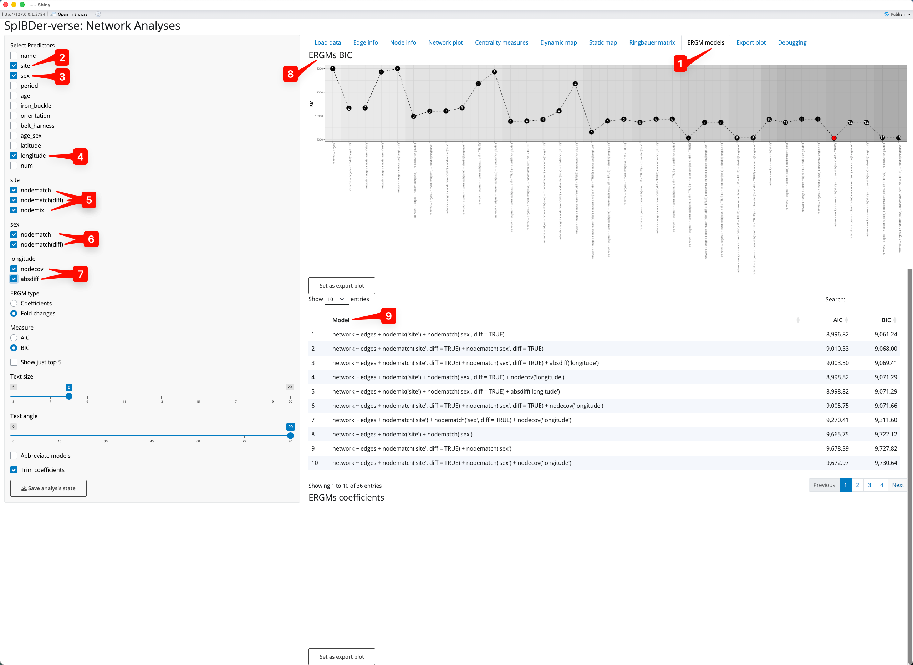
Figure 19: ERGMs tab.
As suggested by the authors(Rohrlach et al. 2026), we use the Bayesian information criterion (BIC) for model selection, and wish to choose the model with the smallest BIC value. The BIC values are shown in the ERGMs BIC plot [8], and we can see that the red point indicates that the best model uses the predictors site nodemix[site] and sex nodematch(diff)[sex]. We can also see the models ordered by their BIC in the BIC Model panel [9], also showing that this model performed best.
We can look at the model output, to quantify the effects of the variables in the model. To do this click on the model(s) of interest [10]. Once you select at least one model, a horizontal bar plot of the coefficients [[11] and a table of coefficients [12] will appear below the model list. The bar plot shows the fold-change in the probability of two individuals being related (and this can be changed to show the actual coefficient value from the model which is in the log-odds scale), and these are brown if the fold-change is an increase, and blue if it is a decrease. For example, two individuals buried at KFJ are 4.56 times [13] more likely to be related (compared to two individuals buried at HNJ, which is the comparison level as HNJ.HNJ is the alphabetically-first level combination). However, we can also see that two female individuals are less likely to be related (compared to a male and a female individual), by a factor of 0.36-fold [14].
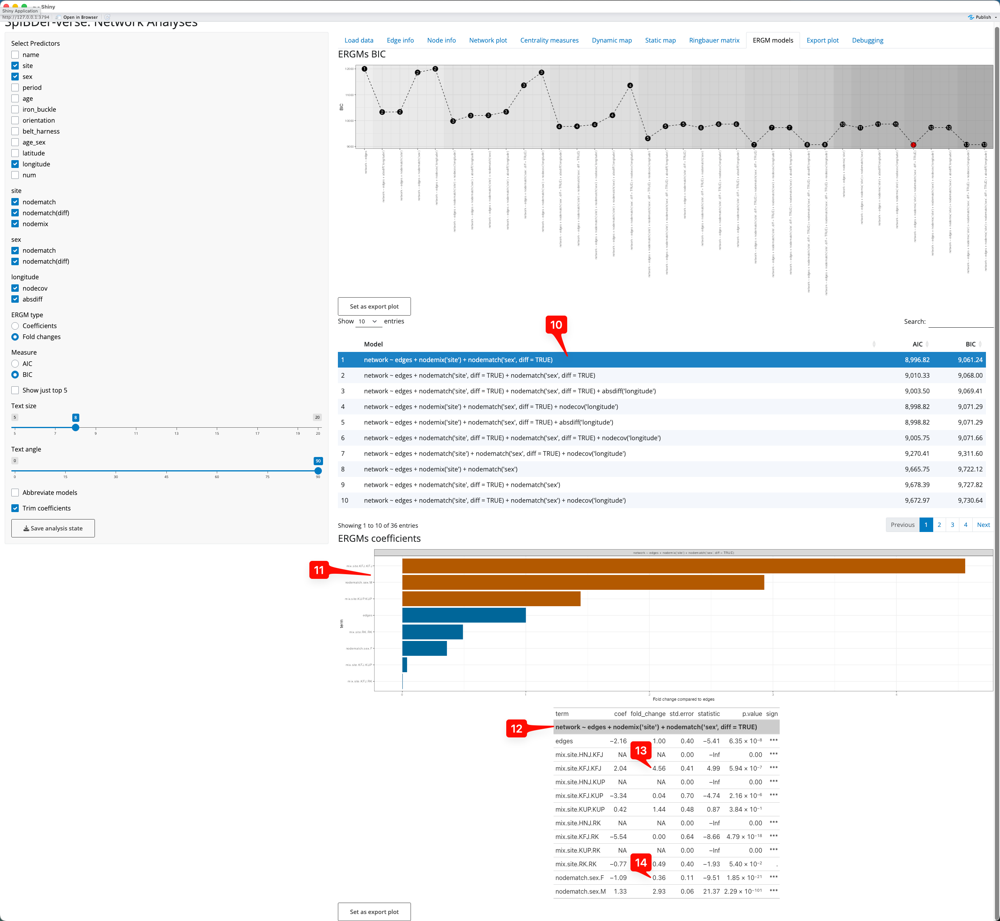
Figure 20: ERGMs tab - selecting a model an interpreting the output.
Note that if more than one model is selected (for comparison) the bar plot and the coefficient table are separated.
Exporting a plot
Under every plot that you make in SpIBDer-App (all except for the dynamic map) is a “Set as export plot” button. This button sets the figure above it as “exported” to the “Export Plot” Tab [1]. Once a figure has been set to be exported, you change from the tab that it is generated in to the “Export Plot” tab.
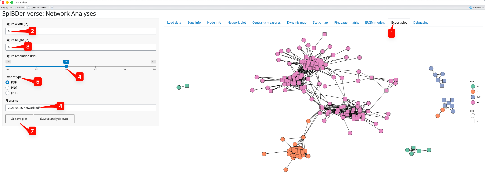
Figure 21: Save plot tab.
We can now choose the figure width [2] and height [3] (in inches), the resolution [4] (in PPI), the file type of the output file [5] (PDF, PNG or JPEG) and the file name here [6]. We then save the file by clicking on “Save Plot” [7], and choosing the output folder.
What to do if it does not work
As for everything in life, I suggest unrestrained panic. It has served me well so far in my career, and I see no reason why this should change.
However, if you prefer, you can contact us via GitHub (https://github.com/jonotuke/spIBDerverse), or email at adam_ben_rohrlach[at]eva.mpg.de or simon.tuke[at]adelaide.edu.au (replace [at] with @).